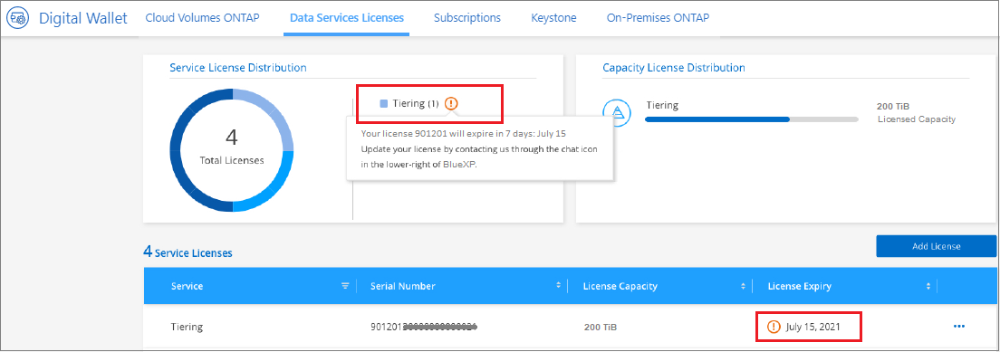
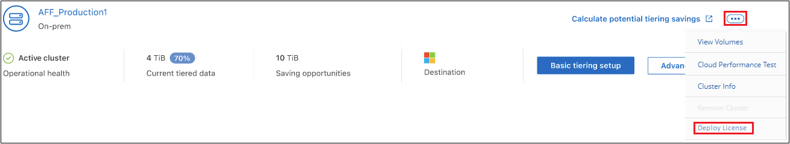

Manos a la obra
Manos a la obra
Configura las licencias para la organización en niveles de BlueXP
 Sugerir cambios
Sugerir cambios
Una prueba gratuita de 30 días de la organización en niveles de BlueXP comienza cuando configuras la organización en niveles desde el primer clúster. Cuando finalice la prueba gratuita, tendrás que pagar la organización en niveles de BlueXP mediante una suscripción de pago por uso o anual desde el mercado de tu proveedor de cloud, una licencia BYOL de NetApp o una combinación de ambas opciones.
Antes de leer más:
-
Si ya te has suscrito a la suscripción de BlueXP (PAYGO) en el mercado de tu proveedor de nube, también te suscribirás automáticamente a la organización en niveles de BlueXP para sistemas ONTAP on-premises. Verás una suscripción activa en la pestaña Consola en las instalaciones de BlueXP Tiering. No tendrá que volver a suscribirse. Verás una suscripción activa en la cartera digital de BlueXP.
-
La licencia BYOL BlueXP Tiering (anteriormente conocida como licencia de «Cloud Tiering») es una licencia flotante que puedes utilizar en varios clústeres de ONTAP on-premises en tu cuenta de BlueXP. Esto es diferente (y mucho más sencillo) que en el pasado en el que se adquirió una licencia FabricPool para cada clúster.
-
Los datos se ofrecen en niveles en StorageGRID sin ningún coste, por lo que no es necesario ni una licencia BYOL ni un registro PAYGO. Estos datos organizados en niveles no cuentan con la capacidad adquirida en su licencia.
prueba gratuita de 30 días
Si no tienes una licencia de organización en niveles de BlueXP, la prueba gratuita de 30 días de la organización en niveles de BlueXP comienza cuando configuras la organización en niveles en el primer clúster. Cuando finalice la prueba gratuita de 30 días, tendrás que pagar la organización en niveles de BlueXP mediante una suscripción de pago por uso, una suscripción anual, una licencia BYOL o una combinación de ellas.
Si su prueba gratuita finaliza y no se ha suscrito o agregado una licencia, ONTAP ya no organiza los datos inactivos en niveles para el almacenamiento de objetos. Todos los datos previamente organizados en niveles siguen siendo accesibles; lo que significa que se pueden recuperar y utilizar estos datos. Cuando se recuperan, estos datos se mueven de nuevo al nivel de rendimiento del cloud.
Utiliza una suscripción PAYGO en la organización en niveles de BlueXP
Las suscripciones de pago por uso desde el mercado de su proveedor de cloud permiten utilizar las licencias para usar los sistemas Cloud Volumes ONTAP y muchos servicios de datos de cloud, como la organización en niveles de BlueXP.
Suscribirse desde AWS Marketplace
Suscríbete a la organización en niveles de BlueXP desde AWS Marketplace y configura una suscripción de pago por uso para la organización de los datos en niveles desde los clústeres de ONTAP a AWS S3.
-
En BlueXP, haz clic en Mobility > Tiering > On-premises Dashboard.
-
En la sección Marketplace subscriptions, haga clic en Suscribirse en Amazon Web Services y, a continuación, haga clic en continuar.
-
Suscríbase en el "Mercado AWS", Y a continuación, vuelva a iniciar sesión en el sitio Web de BlueXP para completar el registro.
El siguiente vídeo muestra el proceso:
Suscribirse desde Azure Marketplace
Suscríbete a la organización en niveles de BlueXP desde Azure Marketplace y configura una suscripción de pago por uso para la organización de datos en niveles desde los clústeres de ONTAP al almacenamiento de Azure Blob.
-
En BlueXP, haz clic en Mobility > Tiering > On-premises Dashboard.
-
En la sección Marketplace subscriptions, haga clic en Suscribirse en Microsoft Azure y, a continuación, haga clic en continuar.
-
Suscríbase en el "Azure Marketplace", Y a continuación, vuelva a iniciar sesión en el sitio Web de BlueXP para completar el registro.
El siguiente vídeo muestra el proceso:
Suscribirse desde Google Cloud Marketplace
Suscríbete a la organización en niveles de BlueXP desde Google Cloud Marketplace y configura una suscripción de pago por uso para la organización de datos en niveles desde los clústeres de ONTAP al almacenamiento de Google Cloud.
-
En BlueXP, haz clic en Mobility > Tiering > On-premises Dashboard.
-
En la sección Marketplace Subscriptions, haga clic en Suscribirse en Google Cloud y, a continuación, haga clic en continuar.
-
Suscríbase en el "Google Cloud Marketplace", Y a continuación, vuelva a iniciar sesión en el sitio Web de BlueXP para completar el registro.
El siguiente vídeo muestra el proceso:
Utilizar un contrato anual
Paga por la organización en niveles de BlueXP cada año comprando un contrato anual. Los contratos anuales están disponibles en plazos de 1, 2 o 3 años.
Al organizar los datos inactivos en niveles en AWS, puedes suscribirte a un contrato anual del "AWS Marketplace". Si desea utilizar esta opción, configure su suscripción desde la página Marketplace y, a continuación, configure "Asocie la suscripción con sus credenciales de AWS".
Al organizar en niveles los datos inactivos en Azure, puedes suscribirte a un contrato anual del "Página de Azure Marketplace". Si desea utilizar esta opción, configure su suscripción desde la página Marketplace y, a continuación, configure "Asocie la suscripción a sus credenciales de Azure".
Actualmente, los contratos anuales no se admiten al organizar en niveles en Google Cloud.
Utiliza una licencia BYOL (BYOL) de la organización en niveles de BlueXP
Las licencias que traiga sus propias de NetApp proporcionan períodos de 1, 2 o 3 años. La licencia BYOL BlueXP Tiering (antes conocida como licencia de «Cloud Tiering») es una licencia flotante que puedes utilizar en varios clústeres de ONTAP on-premises de tu cuenta de BlueXP. La capacidad total de organización en niveles definida en tu licencia de organización en niveles de BlueXP se comparte entre todos de tus clústeres on-premises, por lo que la renovación y la licencia iniciales resultan muy sencillas. La capacidad mínima para una licencia BYOL en niveles comienza en 10 TiB.
Si no tienes una licencia de organización en niveles de BlueXP, ponte en contacto con nosotros para comprar una:
-
Mailto:ng-cloud-tiering@netapp.com?Subject=Licensing[Enviar correo electrónico para adquirir una licencia].
-
Haga clic en el icono de chat situado en la parte inferior derecha de BlueXP para solicitar una licencia.
Opcionalmente, si tiene una licencia basada en nodos sin asignar para Cloud Volumes ONTAP que no utilizará, puede convertirla en una licencia de organización en niveles de BlueXP que tenga la misma equivalencia de dólar y la misma fecha de caducidad. "Vaya aquí para obtener más información".
Utilizarás la página de cartera digital de BlueXP para gestionar las licencias de BYOL en la organización en niveles de BlueXP. Puede añadir licencias nuevas y actualizar las licencias existentes.
La organización en niveles de las licencias BYOL de BlueXP comenzará en 2021
La nueva licencia BlueXP Tiering se introdujo en agosto de 2021 para configuraciones de organización en niveles compatibles con BlueXP mediante el servicio de organización en niveles de BlueXP. Actualmente, BlueXP admite la organización en niveles en el siguiente almacenamiento en cloud: Amazon S3, almacenamiento Azure Blob, Google Cloud Storage, StorageGRID de NetApp y almacenamiento de objetos compatible con S3.
La licencia FabricPool que puede haber utilizado en el pasado para organizar los datos de ONTAP en las instalaciones en el cloud se conserva sólo para implementaciones de ONTAP en sitios que no tienen acceso a Internet (también conocidos como "sitios oscuros") y para configuraciones de organización en niveles en IBM Cloud Object Storage. Si utiliza este tipo de configuración, instalará una licencia de FabricPool en cada clúster mediante System Manager o la CLI de ONTAP.

|
Ten en cuenta que la organización en niveles en StorageGRID no requiere una licencia de organización en niveles de FabricPool o BlueXP. |
Si utiliza actualmente la licencia de FabricPool, no se verá afectado hasta que la licencia de FabricPool alcance su fecha de vencimiento o la capacidad máxima. Póngase en contacto con NetApp cuando necesite actualizar su licencia o con versiones anteriores para asegurarse de que no se interrumpa su capacidad para organizar los datos en niveles en el cloud.
-
Si utilizas una configuración compatible con BlueXP, tus licencias de FabricPool se convertirán en licencias de organización en niveles de BlueXP y aparecerán en la cartera digital de BlueXP. Cuando esas licencias iniciales caduquen, deberás actualizar las licencias de organización en niveles de BlueXP.
-
Si está utilizando una configuración que no es compatible con BlueXP, continuará utilizando una licencia de FabricPool. "Vea cómo se lleva a cabo la organización en niveles de licencias con System Manager".
A continuación, se indican algunas cosas que debe saber sobre las dos licencias:
| Licencia de organización en niveles de BlueXP | Licencia de FabricPool |
|---|---|
Se trata de una licencia flotante que se puede utilizar en varios clústeres ONTAP de las instalaciones. |
Se trata de una licencia por clúster que adquiere y licencia para every cluster. |
Está registrada en la cartera digital de BlueXP. |
Se aplica a clústeres individuales mediante System Manager o la CLI de ONTAP. |
La configuración y la gestión de la organización en niveles se lleva a cabo a través del servicio de organización en niveles de BlueXP. |
La configuración y la gestión por niveles se realizan mediante System Manager o la interfaz de línea de comandos de ONTAP. |
Una vez configurado, puede utilizar el servicio de organización en niveles sin una licencia durante 30 días con la prueba gratuita. |
Una vez configurado, puede organizar los primeros 10 TB de datos de forma gratuita. |
Obtén el archivo de licencia de la organización en niveles de BlueXP
Después de comprar la licencia de organización en niveles de BlueXP, puedes activar la licencia en BlueXP introduciendo el número de serie y la cuenta de NSS de BlueXP Tiering o cargando el archivo de licencia de NLF. Los pasos a continuación muestran cómo obtener el archivo de licencia de NLF si planea utilizar ese método.
Antes de comenzar, necesitará tener la siguiente información:
-
Número de serie de organización en niveles de BlueXP
Busque este número en su pedido de ventas o póngase en contacto con el equipo de cuentas para obtener esta información.
-
ID de cuenta de BlueXP
Puede encontrar su ID de cuenta de BlueXP seleccionando el menú desplegable cuenta de la parte superior de BlueXP y, a continuación, haciendo clic en Administrar cuenta junto a su cuenta. Su ID de cuenta se encuentra en la ficha Descripción general.
-
Inicie sesión en la "Sitio de soporte de NetApp" Y haga clic en sistemas > licencias de software.
-
Introduce el número de serie de la licencia de organización en niveles de BlueXP.

-
En la columna clave de licencia, haga clic en obtener archivo de licencia de NetApp.
-
Introduzca su ID de cuenta de BlueXP (esto se denomina ID de inquilino en el sitio de soporte) y haga clic en Enviar para descargar el archivo de licencia.

Añade licencias BYOL de la organización en niveles de BlueXP a tu cuenta
Después de comprar una licencia de organización en niveles de BlueXP para tu cuenta de BlueXP, tendrás que añadir la licencia a BlueXP para utilizar el servicio de organización en niveles de BlueXP.
-
Haga clic en Gobernanza > Cartera digital > Licencias de servicios de datos.
-
Haga clic en Agregar licencia.
-
En el cuadro de diálogo Add License, introduzca la información de la licencia y haga clic en Add License:
-
Si tiene el número de serie de la licencia de organización en niveles y conoce su cuenta de NSS, seleccione la opción introducir número de serie e introduzca esa información.
Si su cuenta del sitio de soporte de NetApp no está disponible en la lista desplegable, "Agregue la cuenta NSS a BlueXP".
-
Si tiene el archivo de licencia de organización en niveles, seleccione la opción cargar archivo de licencia y siga las indicaciones para adjuntar el archivo.

-
BlueXP añade la licencia para que tu servicio de organización en niveles de BlueXP esté activo.
Actualiza una licencia BYOL de la organización en niveles de BlueXP
Si el plazo de la licencia se acerca a la fecha de caducidad o si la capacidad de la licencia está llegando al límite, se te notificará en la organización en niveles de BlueXP.

Este estado también aparece en la página de la cartera digital de BlueXP.

Puedes actualizar la licencia de la organización en niveles de BlueXP antes de que caduque para que no haya interrupción en la capacidad de organizar los datos en niveles en la nube.
-
Haz clic en el icono de chat en la parte inferior derecha de BlueXP para solicitar una extensión de tu término o capacidad adicional a la licencia de organización en niveles de BlueXP para el número de serie concreto.
Después de pagar la licencia y estar registrado en el sitio de soporte de NetApp, BlueXP actualiza automáticamente la licencia en la cartera digital de BlueXP y la página de licencias de servicios de datos reflejará el cambio que se ha producido en un plazo de 5 a 10 minutos.
-
Si BlueXP no puede actualizar automáticamente la licencia, deberá cargar manualmente el archivo de licencia.
-
Puede hacerlo Obtenga el archivo de licencia del sitio de soporte de NetApp.
-
En la página de Digital Wallet de BlueXP, en la ficha Data Services Licenses, haga clic en
 Para el número de serie del servicio que está actualizando y haga clic en Actualizar licencia.
Para el número de serie del servicio que está actualizando y haga clic en Actualizar licencia.
-
En la página Update License, cargue el archivo de licencia y haga clic en Actualizar licencia.
-
BlueXP actualiza la licencia para que tu servicio de organización en niveles de BlueXP siga estando activo.
Aplica las licencias de organización en niveles de BlueXP a los clústeres en configuraciones especiales
Los clústeres de ONTAP en las siguientes configuraciones pueden usar licencias de organización en niveles de BlueXP, pero la licencia debe aplicarse de una forma diferente a la de los clústeres de un solo nodo, clústeres configurados con alta disponibilidad, clústeres en configuraciones de Tiering Mirror y configuraciones de MetroCluster con FabricPool Mirror:
-
Clústeres organizados en niveles en IBM Cloud Object Storage
-
Clústeres instalados en «sitios oscuros»
Procese los clústeres existentes que tienen una licencia de FabricPool
Cuando usted "Descubre cualquiera de estos tipos de clúster especiales en la organización en niveles de BlueXP", BlueXP tiering reconoce la licencia de FabricPool y la añade a la cartera digital de BlueXP. Esos clústeres seguirán organizando en niveles los datos de la manera habitual. Cuando la licencia de FabricPool caduque, necesitarás comprar una licencia de organización en niveles de BlueXP.
Proceso para los clústeres recién creados
Cuando detectes los clústeres típicos en la organización en niveles de BlueXP, configurarás la organización en niveles mediante la interfaz de organización en niveles de BlueXP. En estos casos, se realizan las siguientes acciones:
-
La licencia «primaria» de organización en niveles de BlueXP realiza un seguimiento de la capacidad que están utilizando para organizar en niveles todos los clústeres con el fin de asegurarse de que haya suficiente capacidad en la licencia. La capacidad total con licencia y la fecha de caducidad se muestran en la cartera digital de BlueXP.
-
Se instala automáticamente una licencia de organización en niveles "secundaria" en cada clúster para comunicarse con la licencia "principal".

|
La capacidad con licencia y la fecha de vencimiento que se muestran en System Manager o en la interfaz de línea de comandos de ONTAP para la licencia "secundaria" no son la información real, por lo que no debe preocuparse si la información no es la misma. El software de organización en niveles BlueXP gestiona estos valores internamente. La información real se sigue en la cartera digital de BlueXP. |
Para las dos configuraciones enumeradas anteriormente, deberás configurar la organización en niveles mediante System Manager o la CLI de ONTAP (no mediante la interfaz de organización en niveles de BlueXP). Así que, en estos casos, tendrás que enviar la licencia «secundaria» a estos clústeres de forma manual desde la interfaz de organización en niveles de BlueXP.
Tenga en cuenta que, dado que los datos se organizan en niveles en dos ubicaciones de almacenamiento de objetos diferentes para las configuraciones de segmentación de almacenamiento, deberá adquirir una licencia con capacidad suficiente para organizar los datos en niveles en ambas ubicaciones.
-
Instale y configure los clústeres de ONTAP mediante System Manager o la interfaz de línea de comandos de ONTAP.
No configure la organización en niveles en este momento.
-
"Compra una licencia de organización en niveles de BlueXP" para la capacidad que se necesita para el nuevo clúster o los clústeres.
-
En BlueXP, "Añade la licencia a la cartera digital de BlueXP".
-
En la organización en niveles de BlueXP, "detectar los clústeres nuevos".
-
En la página Clusters, haga clic en
Para el clúster y seleccione desplegar licencia.
-
En el cuadro de diálogo Deploy License, haga clic en Deploy.
La licencia secundaria se pone en marcha en el clúster de ONTAP.
-
Volver a System Manager o a la interfaz de línea de comandos de ONTAP y configurar la configuración de organización en niveles.